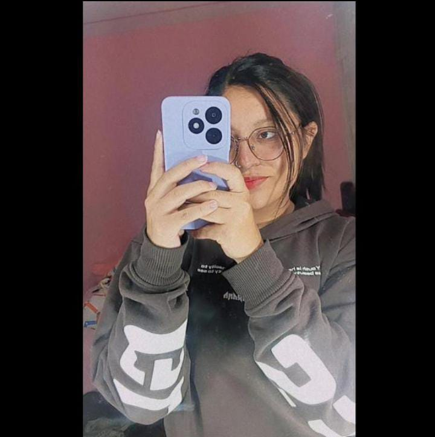
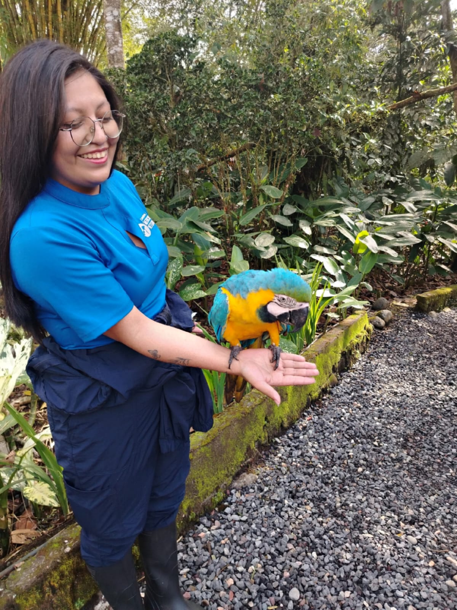
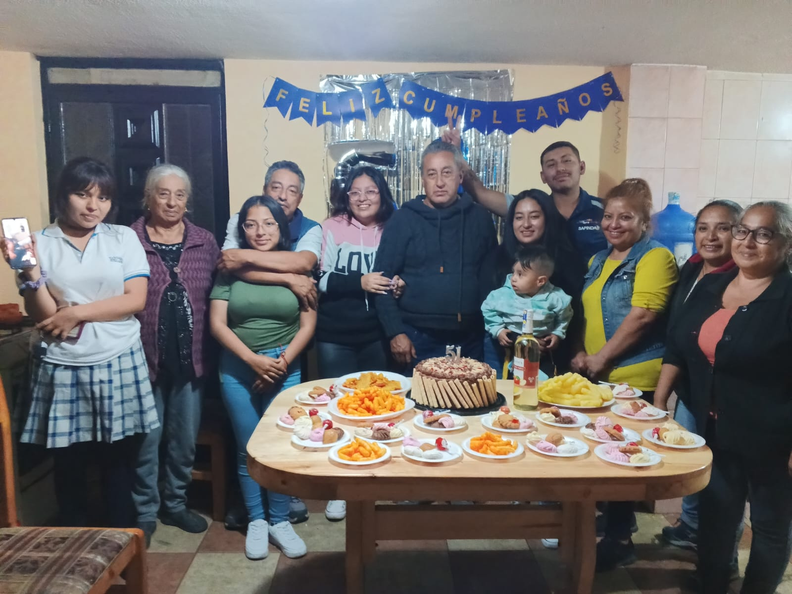
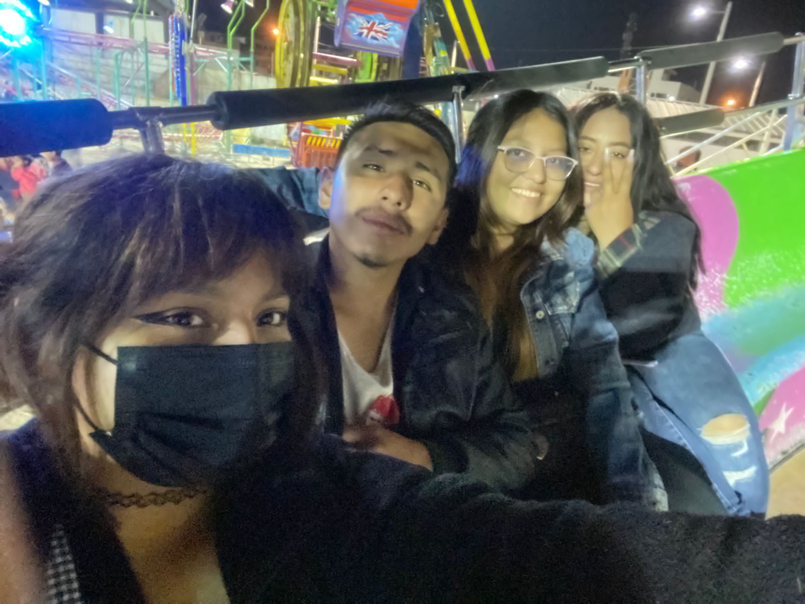

Karen Zuña
Estudiante de Medicina Veterinaria | Apasionada por la fauna silvestre y el bienestar animal
Ambato, Ecuador
 Formación Académica
Formación Académica
Medicina Veterinaria
Universidad Regional Autónoma de los Andes (UNIANDES) — Ambato, Ecuador
- Formación integral en ciencias básicas veterinarias: anatomía, fisiología, histología y bioquímica.
- Participación activa en prácticas de laboratorio, observación clínica y actividades extracurriculares.
- Interés enfocado en el bienestar animal, medicina preventiva y conservación de especies.
 Objetivo Profesional
Objetivo Profesional
- Como futura médica veterinaria, mi propósito es especializarme en el cuidado y manejo clínico de pequeñas especies, equinos o vida silvestre.
- Aspiro a contribuir al bienestar animal, la salud pública y la conservación de la biodiversidad, aplicando mis conocimientos científicos con ética, compromiso y vocación de servicio.
 Experiencia Académica y Prácticas
Experiencia Académica y Prácticas
Prácticas de laboratorio – UNIANDES
- Manejo de microscopía óptica y técnicas de tinción (hematoxilina-eosina, azul de metileno).
- Análisis histológico de tejidos animales.
- Aplicación rigurosa de normas de bioseguridad en entornos clínicos y de laboratorio.
Proyectos académicos destacados
- Observación comparativa de células bucales y células de cebolla bajo microscopio.
- Análisis estructural y funcional de epitelios en distintos órganos.
- Cálculo de presión osmótica mediante la ecuación de Van’t Hoff.
 Habilidades
Habilidades
Observación y análisis histológico
Manejo de equipos de laboratorio y protocolos de bioseguridad
Redacción científica clara y estructurada
Conocimientos sólidos en fisiología sistémica y endocrinología
Adaptabilidad para sintetizar información compleja en formatos accesibles
Dominio del formato Vancouver para referencias bibliográficas
Intereses
Clínica y cirugía de animales de compañía
Medicina y rehabilitación de equinos
Conservación y manejo de fauna silvestre
Investigación en fisiología animal y salud pública veterinaria
 Galería de fotos
Galería de fotos


